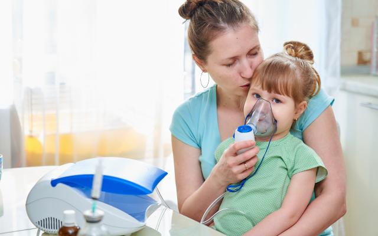

- Prevención La principal medida preventiva es la vacunación. Otras acciones incluyen: Evitar el contacto con personas enfermas Aislar a pacientes infectados Lavarse las manos frecuentemente Uso de mascarillas en entornos de riesgo Ventilar los espacios cerrados
